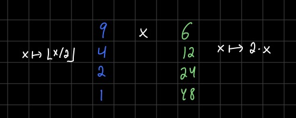
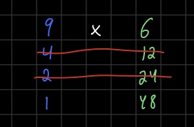
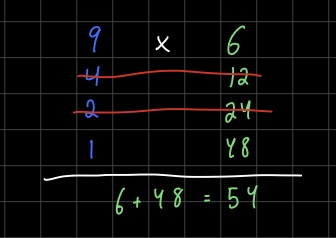

Duplation-Mediation Multiplication
I’ve been learning about algorithms lately, and I learned about an alternative algorithm for multiplication. Doubtless most readers here will probably have heard of this algorithm, its super well-known, but I had never heard of it before, and I had a surprisingly hard time understanding why it worked. So I’m gonna write a short, fun little blog post about this.
The algorithm is called by many names, one of which is Russian peasant multiplication[^1]. I think this is a pretty shitty name, so I’m just going to call it duplation-mediation multiplication. The reason for that name should become apparent shortly. This algorithm is super old, it was used by the ancient Egyptians for example, and I think it is actually easier to do than the method of multiplying that I learned in elementary schoool.
The algorithm goes like this. Suppose we want to multiply \(9 \times 6\). We write them side-by-side and then keep dividing \(9\) by \(2\), throwing away any remainder, until we get to \(1\). On the other side, we keep multiplying \(6\) by \(2\). The operation of multiplying by \(2\) is called duplation and the operation of dividing by \(2\) and throwing away the remainder is called mediation, hence the name of the algorithm. In other words, mediation is the operation \(x \mapsto \lfloor x/2 \rfloor\) and duplation is \(x \mapsto 2x\).

Okay, now the next step is to cross out all of the rows in which the left hand number is even.

Finally we add up the numbers on the left hand column.

Like magic, we get the right answer \(9 \times 6 = 54\)! When I first saw this I was kind of baffled. It was clear to me that something was going on with converting the numbers to binary, but I wasn’t quite sure what was happening.
The first thing I noticed is that if we convert our numbers from decimal to binary, then the operation of mediation \(x \mapsto \lfloor x/2 \rfloor\) is the same thing as taking the right-shift in binary. In other words, if we consider \(9\) in binary, which is \([9]_2 = 1001\), then \([\lfloor 9/2 \rfloor]_2 = [4]_2 = 100\). Similarly, duplation \(x \mapsto 2x\) is the same thing as left-shift in binary, for example since \([6]_2 = 110\) and \([2 \times 6]_2 = [12]_2 = 1100\). So that was interesting, but what was up with the crossing out part?
Well what helped me understand this the most was by writing \(9\) in its binary expansion. \(9 = 2^3 + 2^0 = 8 + 1\). So \(9 \times 6 = (2^3 + 2^0) \times 6 = 2^0 \times 6 + 2^3 \times 6\). In the pictures above, we have \(2^0 \times 6 = 6\) appearing at the top, and \(2^3 \times 6 = 48\) appearing at the bottom. In other words, we crossed out the other two rows because \(2^1\) and \(2^2\) don’t appear in the binary expansion of \(9\)!
But why does the left hand column give the binary expansion of \(9\)? Well, what is the binary expansion of \(9\)? It is \(1001\). The rightmost digit is \(1\) because \(9\) is odd, i.e. \(9 \text{ mod } 2 = 1\). The next digit can be obtained by looking at the right shift of \(1001\), which is \(100\), which in decimal is \(\lfloor 9/2 \rfloor = 4\). Since this number is even, the rightmost digit is \(0\). Doing this again we have \(\lfloor 4/2 \rfloor = 2 = 10\), and \(\lfloor 2 \rfloor = 1\) in decimal and binary. In other words, you can easily obtain the binary representation of any integer by just keep on dividing it in half and seeing whether it is even or odd.
Hopefully this little post brought you some joy and taught you something new. It should be said that this algorithm is technically not any more efficien than the usual way of multiplying, they are both \(\mathcal{O}(n^2)\). But I find multiplying and dividing by \(2\) mentally easier, and then at the end we just sum them up.
[^1] According to Wikipedia, it also goes by ancient Egyptian multiplication, Ethiopian multiplication, Russian multiplication and peasant multiplication.